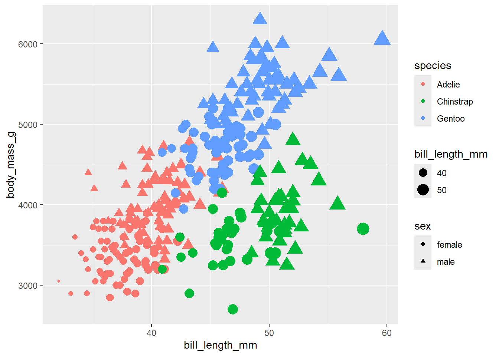
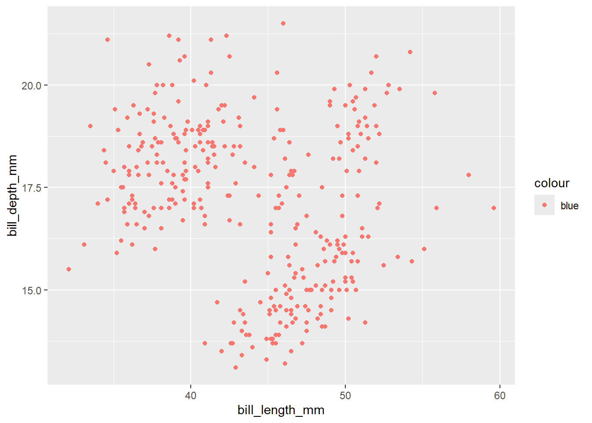
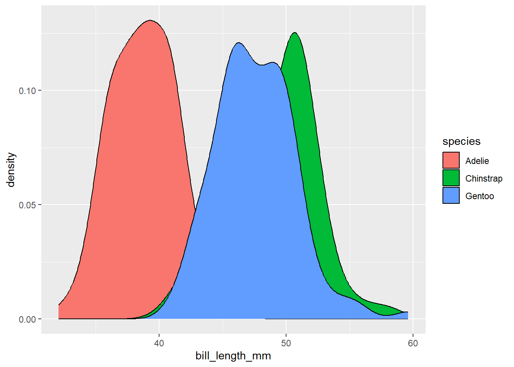
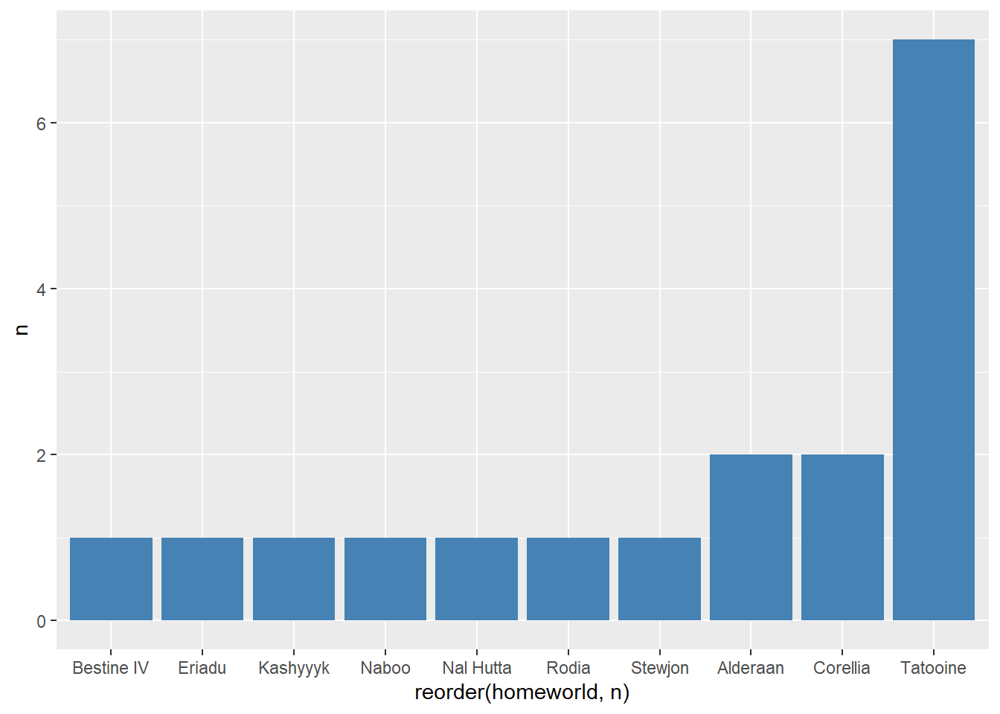
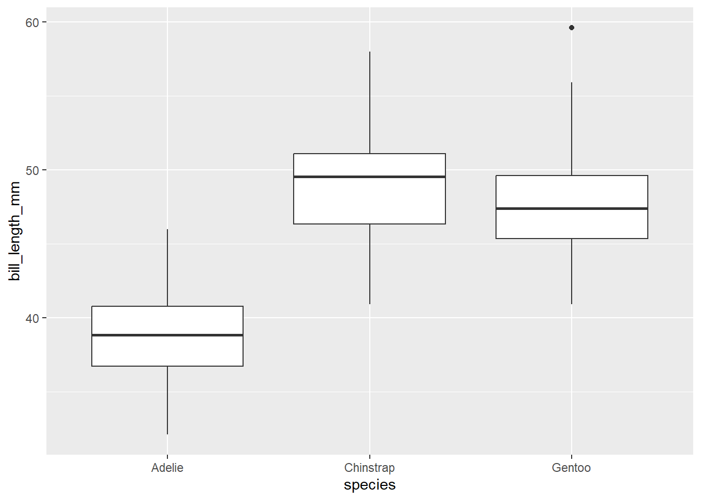

Utilizar ggplot2 para gráficar variables cualitativas y cuantitativas
Reconocer los distintos elementos que componen un gráfico de ggplot2
Utilizar disintos tipos de geometrias (geoms) de acuerdo al tipo de variable
Introducción
La visualización es uno de los aspectos mas importantes para comunicar una idea a partir de un set de datos. R base contiene una serie de herramientas bastante poderosas para crear visualizaciones atractivas y eficientes de manera muy flexible. Sin embargo, dentro de esta flexibilidad se puede crear confusión en el lenguaje para crear un gráfico.
Si bien muchos tipos de visualizaciones en R base son relativamente intuitivos, por ejemplo hist(), barplot(), boxplot(), la cosa se complica cuando se quiere incluir distintas capas o diferenciar grupos (por ejemplo, abline(), par(), etc.)
Por otro lado, ggplot2 es un motor gráfico basado en la gramática grafica de Wilkinson. Bajo este contexto, un gráfico es una serie de capas (layers) similares a una transparecia, con algo impreso en ellas, que puede ser texto, puntos, lineas, barras, o cualquier otro tipo de representación. La imagen final, cada una de estas capas se colocan una sobre otra.
Imagen adaptada de The Grammar of Graphics
Además, ggplot2 se desarrolla dentro de la filosofia de Tidyverse por lo que usa una sintaxis mas simple e intuitiva para el usuario.
Tomemos como ejemplo la base de datos de penguins. Si queremos graficar un boxplot con la longitud del pico de los pingüinos Adelie en todas las islas, en R base seria algo como esto:
penguins <-read_csv("data/palmer_penguins.csv") %>%na.omit()penguins_adeline <- penguins[penguins$species =="Adelie", ]par(mfrow =c(1,3), oma =c(0, 0, 2, 0))boxplot(bill_length_mm ~ sex, data = penguins_adeline, main="isla1")boxplot(bill_length_mm ~ sex, data = penguins_adeline, main ="isla2")boxplot(bill_length_mm ~ sex, data = penguins_adeline, main ="isla3")mtext("Datos de longitud del culmen", outer =TRUE)
dev.off()
null device
1
…mientras que con ggplot podemos usar la siguiente sintaxis:
penguins %>%filter(species =="Adelie") %>%ggplot(aes(x = sex, y = bill_length_mm))+geom_boxplot()+facet_wrap(~island)+labs(title ="Datos de longitud del culmen")
Gramática de las gráficas; geoms y aesthetics
Como se mencionó anteriormente, ggplot2() se basa en la gramática de gráficas la cual consiste en una serie de capas que se superponen entre ellas, por lo que podemos construir los gráficos paso a paso:
Dentro de estas capas, algunas de ellas son necesarias mientras que otras son opcionales
Los elementos necesarios para realizar un gráfico con ggplot son los siguientes:
data:
un data.frame o tibble que contiene los datos que se quieren visualizar. Este tiene que estar en formato tidy
Aestetics (aes): Lista de relación entre las variables
x, y: Variables en el eje x y y
color: Color de las geometrías de acuerdo a los datos
geom_line(): Líneas conectando puntos por incrementos en el valor de x
geom_path(): Líneas conectando puntos in una secuencia de aparición
geom_boxplot(): gráfico de cajas y bigotes para variables categoricas
geom_bar(): Gráfica de barras para variables categoricas
geom_histogram(): Histograma para valores de x continuos
geom_smooth(): Líeneas de regresión o correlación entre variables
Poniendo capas: ggplot()
Para empezar a hacer gráficos, vamos a utilizar la base de datos de los pingünios (penguins) que ya hemos utilizado anteriormente. Para crear un gráfico con ggplot se usa el comando ggplot()
ggplot(data = penguins)
Al ejecutar la función, no se genera ningún error pero tampoco vemos ninguna gráfica. Esto se debe a que no hemos indicado a ggplot cuales son las coordenadas y ni las geometrías que queremos graficar.
Sin embargo, aún no vemos ninguna gráfica, ya que para esto es necesario indicar que tipo de geometría (geom()) de gráfica queremos utilizar.
Para crear un diagrama, por ejemplo, de dispersión es necesario agregarle la geometria geom_point(). Es importante recalcar que cada nueva capa que agreguemos al gráfico se agrega con el símbolo +.
ggplot(data = penguins, aes(x = bill_length_mm, y = body_mass_g))+geom_point()
Donde poner los aes?
Los aes() se pueden definir desde que se inicia la función ggplot()pero estos aes se heredaran al resto de las capas. Por otro lado, se pueden definir los aes dentro de cada geom()
ggplot(data = data, aes(x = x, y = y))+geom_point()
es igual que
ggplot()+geom_point(data = data, aes(x = x, y = y))
por ejemplo, podemos asignarle un color diferente a cada especie con el argumento color
ggplot(data = penguins, aes(x = bill_length_mm, y = body_mass_g, color = species))+geom_point()
Y asignarle una forma diferente a por sexo con el argumento shape
ggplot(data = penguins, aes(x = bill_length_mm, y = body_mass_g, color = species, shape = sex))+geom_point()
o cambiar el tamaño con size
ggplot(data = penguins, aes(x = bill_length_mm, y = body_mass_g, color = species, shape = sex, size = bill_length_mm))+geom_point()
ggplot(data = penguins, aes(x = bill_length_mm, y = body_mass_g, color = species))+geom_point()+geom_smooth(method ="lm")
`geom_smooth()` using formula = 'y ~ x'

ggplot(data = penguins)+geom_point(aes(x = bill_length_mm, y = body_mass_g, color = species))+geom_smooth(aes(x = bill_length_mm, y = body_mass_g), method ="lm", color ="grey75")+geom_smooth(aes(x = bill_length_mm, y = body_mass_g, color = species), method ="lm")
`geom_smooth()` using formula = 'y ~ x'
`geom_smooth()` using formula = 'y ~ x'
Breve tour por las distintas geometrias
Los nombres de las funciones de geometría siguen el patrón: geom_X donde X es el nombre de la geometría. Algunos ejemplos incluyen geom_point, geom_bar y geom_histogram.
A continuación repasaremos algunas de las geometrías mas comunes:
Variables continuas
Para facilitar el tour, vamos a generar un objeto con las coordenadas de la longitud del pico distinguiendo en diferente color de relle
base <-ggplot(penguins, aes(x = bill_length_mm, fill = species))
geom_histogram()
base +geom_histogram()
`stat_bin()` using `bins = 30`. Pick better value with `binwidth`.

geom_density()
base +geom_density()
geom_qqplot()
ggplot(penguins, aes(sample = bill_length_mm, color = species)) +geom_qq()+geom_qq_line()
Variables discretas
geom_bar() y geom_col()
Las gráficas de barras son una de las visualizaciones mas comunes. ggplot ofrece dos alternativas dependiendo del formato de los datos que se vayan a graficar. Una descripción mas detallada sobre la diferencia entre ambos se puede encontrar aquí.
Recordemos en nuestra sesión pasada que podemos contar el número de apariciones de un elemento dentro de un grupo con la función count()
penguins %>%count(species)
# A tibble: 3 × 2
species n
<chr> <int>
1 Adelie 146
2 Chinstrap 68
3 Gentoo 119
De manera análoga, geom_bar() calculará el número de ocurrencias en cada nivel de una variable categórica.
ggplot(penguins, aes(x = species))+geom_bar()
Por el contrario, si queremos que gráfique un valor ya establecido en los datos, tenemos que incorporar el parámetro stat = "identity".
penguins %>%count(species) %>%ggplot(aes(x = species, y = n))+geom_bar(stat ="identity")

Por otro lado, geom_col() es lo mismo que geom_bar(stat = "identity"), por lo que si tus datos contienen groups y el número de apariciones de cada uno de estos, puedes utilizar esta función
penguins %>%count(species) %>%ggplot(.,aes(x = species, y = n))+geom_col()
Podemos incorporar mas variables discretas dentro de los aes() incorporando la variable fill=
ggplot(penguins, aes(x = species, fill = sex)) +geom_bar()
Por default, geom_bar() nos arrojará una gráfica de barras apiladas. Si queremos poner cada grupo por separado, incorporamos el parametro position = "dodge"
ggplot(penguins, aes(x = species, fill = sex)) +geom_bar(position ="dodge")
O usar position="fill" para que nos arroje valores proporcionales
ggplot(penguins, aes(x = species, fill = sex)) +geom_bar(position ="fill")
Ejercicio: Star Wars
Abre la tabla starwars.csv que se encuentra en el directorio de databases y utilizando pipes genera los siguientes objetos:
Una gráfico de densidad donde se compare la distribución de los valore de altura height de los planetas Tatooine y Naboo, excluyendo los androides.
Una gráfica de barras de los mismas planetas y excluyendo androides donde se muestre la proporción de sexos.
Una gráfica de barras donde se muestre el número de personajes de cada planeta del filme A New Hope
La caja de un boxplot comienza en el primer cuartil Q1 (25%) y termina en el tercero Q3 (75%). Por lo tanto, la caja representa el 50% de los datos centrales, con una línea que representa la mediana. A cada lado de la caja se dibuja un segmento con los datos más lejanos sin contar los valores atípicos (outliers) del boxplot, que en caso de existir, se representarán con círculos.
Partes de un boxplot de una distribución normal. Imagen tomada de Byjus.com
ggplot(data = penguins, aes(x = species, y = bill_length_mm, fill = sex))+geom_boxplot()
Otra opción para visualizar la dispersión de los datos es utilizando gráficos de violin. Esto es particularmente útil cuando se tienen muchos datos.
ggplot(data = penguins, aes(x = species, y = bill_length_mm, fill = sex))+geom_violin()
geom_point() y geom_jitter()
La función geom_point() es una función versatil ya que nos permite crear gráficos de dispersión (mas adelante) o para vidualizar la dispersión real de los datos categóricos
ggplot(data = penguins, aes(x = species, y = bill_length_mm, color = sex))+geom_point()
Esta visualización es poco útil ya que todos los puntos se traslapan. Para poder separar cada uno de los grupos (sexo) necesitamos incluir el parámetro position = para darle espacio entre cada grupo
ggplot(data = penguins, aes(x = species, y = bill_length_mm, color = sex))+geom_point(position =position_dodge(0.2))
El parámetro posiiton = se puede incluir en cualquier tipo de geoms, no solo en los puntos, y permite ajustar el traslape entre grupos. Tiene varias opciones. Entre las mas útiles que utilizaremos en este curso se encuentra:
position_dodge(): Esquiva el traslape lado a lado entre objettos
position_jitter(): Agrega una dispersión aleatoria en el eje x a los puntos para eviar que se traslape
position_jitterdodge(): Agrega de forma simultanea un jitter y dodge a los puntos
position_identity(): No ajusta la posición de los puntos
Entonces, podemos incorporar el parámetro position_jitterdodge() para disminuir el traslape entre los puntos entre y dentor de cada grupo
ggplot(data = penguins, aes(x = species, y = bill_length_mm, color = sex))+geom_point(position =position_jitterdodge(0.1))

¿Jitter? ü§∑Ô∏è
En dotplots, el jitter se refiere al desplazamiento aleatorio de puntos de datos individuales a lo largo del eje para evitar superposiciones, proporcionando una representación más clara de la distribución de datos.
Dado que el valor es aleatorio, cada que se genere la gráfica, el desplazamiento de cada puto puede variar un poco sobre el eje x, pero su valor real (eje y) no se verá afectado.
Visualización de una variable continua + una continua
Este tipo de visualizaciones nos permite ver la relación entre dos variables continuas. Hay diversos geoms que podemos implementar, pero el más común es nuevamente geom_point().
ggplot(data = penguins, aes(x = body_mass_g, y = bill_length_mm, color = sex))+geom_point()

Visualización de resumenes estadisticos: geom_errorbar()
Muchas veces queremos mostrar de forma clara y sencilla como se comportan nuestro datos, por lo que podemos mostrar solamente algunos estadisticos básicos, como el promedio y el grado de dispersión de los datos usando ya sea la desviación estandar o el error estandar. Esto lo podemos lograr utilizando funciones como geom_point() en conjunto con barras de dispersión con la función geom_errorbar().
Realiza una gráfica de barras donde se muestre el promedio \(\pm\) desviación estandar de la longitud del pico de cada especie y sexo. Distingue los sexos por el color de relleno de las barras.
Recuerda que puedes incluir el parámetros position = position_dodge() para separar las barras entre grupos
ver codigo
penguins %>%group_by(species, sex) %>%summarise(promedio =mean(bill_length_mm, na.rm =TRUE),desvest =sd(bill_length_mm, na.rm=TRUE), .groups ="drop") %>%ggplot(., aes(x = species, y = promedio, fill = sex)) +geom_col(position =position_dodge(), color ="black")+geom_errorbar(aes(ymin = promedio - desvest, ymax = promedio + desvest),width =0.5, position =position_dodge(0.9))
Warning
Los amigos no permiten que sus amigos hagan gráficas de barras
Muchas veces al presentar los datos de una investigación nos vamos directamente a mostrar el promedio \(\pm\) desviación estandar o algún otro valor de dispersión pero puede que esto no muestre toda la verdad sobre la distribución de los datos. Como demostración haz el siguiente ejercicio:
Abre la tabla datos_demo.csv que se encuentra en la carpeta de datos
Sin hacer ningún tipo de observación previa, haz una gráfica donde se muestre el promedio \(\pm\) desviación estándar. Para ello, utiliza las funciones group_by() y summarise() que hemos visto anteriormente.
Ahora, utilizando el set de datos completo, gráfica la dispersión de los datos con geom_point() y añade un boxplot con geom_boxplot().
ver codigo
demo <-read_csv("data/datos_demo.csv")# promediosdemo %>%group_by(grupo) %>%summarise(promedio =mean(valor),desvest =sd(valor)) %>%ggplot(.,aes(x = grupo, y = promedio, fill = grupo))+geom_col()+geom_errorbar(aes(ymin = promedio - desvest, ymax = promedio + desvest),width =0.3)# datos completosdemo %>%ggplot(.,aes(x = grupo, y = valor, color = grupo))+geom_boxplot()+geom_point(position =position_jitterdodge(0.2))
¿Que conclusiones puedes sacar de ambas gráficas?
El uso de histogramas, densidades o gráficas de dispersión nos permite hacer un análisis exploratorio de los datos, permitiendo tomar mejores decisiones sobre el tipo de estadísticos o procesamiento que se van a utilizar.
Puedes encontrar una discusión mas profunda sobra la importancia de la correcta presentación e interpretación de datos en publicaciones científicas aquí.